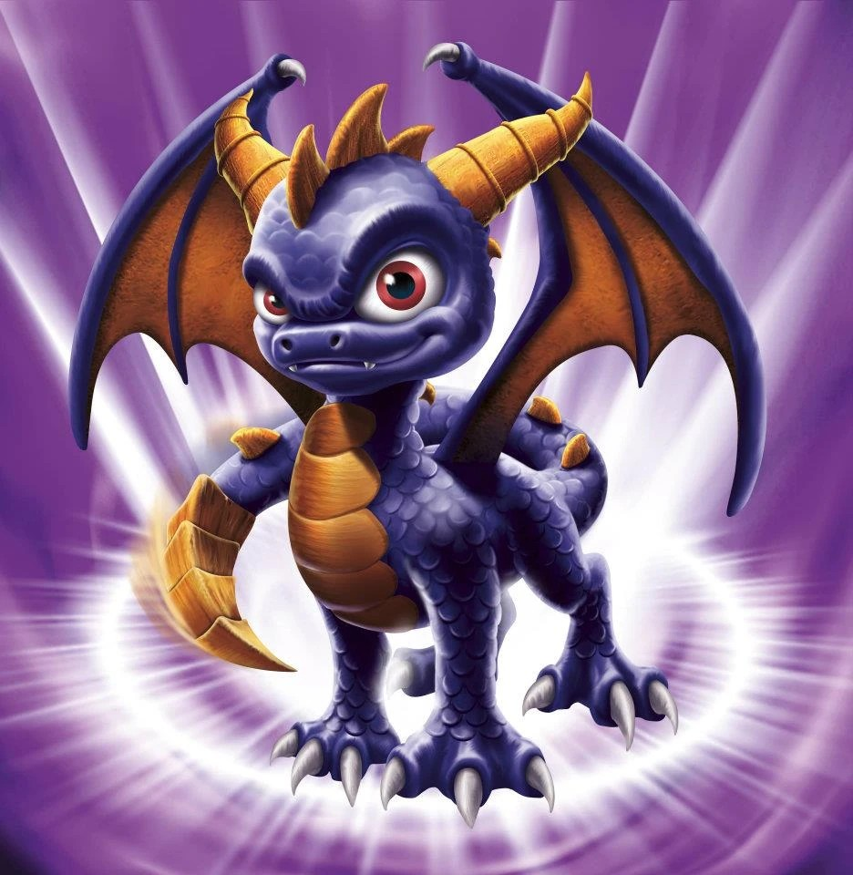
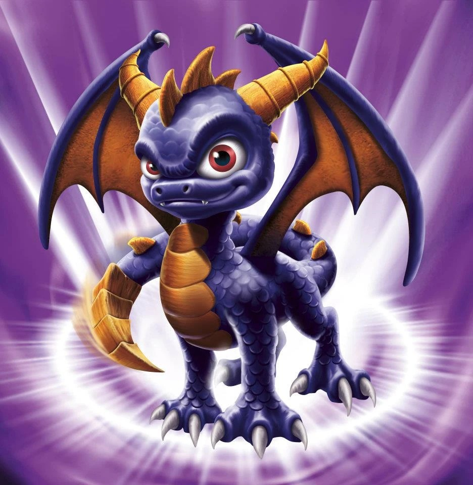

What happened to Skylanders?
24 Jul 2025
Skylanders was a huge part of my childhood, I'm part of the small
chunk of the fanbase that became a fan 3 years, (give or take), before the franchise ended. Meaning, unlike the majority of fans,
I am currently a teenager.
I distinctly remember walking into EB games with my family. Seeing Skylanders I would have killed for, piled in tubs in the middle of the store. Cheap price
tags gripped the grey plastic that each figurine was now stored in. The cashier told us that Skylanders were being discontinued.
Many years later, I was curious why this seemingly gold mine of a game idea died, so I did some digging. To properly convey the importance of this mark in gaming history,
we must start at the beginning, the VERY beginning.

OG Spyro design
Spyro the Dragon
To begin our journey, we actually can't start with the first Skylanders game, instead we go all the way back to 1998 when Spyro the Dragon was first released at the E3
convention in Atlanta, Georgia. The game was originally developed by Insomniac Games and published by Sony Computer Entertainment, exclusively for PlayStation. It was a
collection platformer, including combat interactions, puzzles and hub worlds, pioneering open-ended 3D platformers. You can even fly around parts of the map. The game was
a massive hit, so much so developers went to great lengths to delay piracy for as long as possible. OG fans have fond memories of playing this game. The distinct character
design of the main character, Spyro, had become an icon in the gaming industry, or at least that was the plan. From the image notice his body is very cartoonish and the purple
and orange colour scheme, this remained a staple in every configuration of Spyro.
The purple and orange colours remained a staple in every configuration of Spyro.
From 1998 - 2004, eight Spyro the Dragon games were released, the series coming to its conclusion. However, in 2011 a video game development company named Toys for Bob
needed to impress Activision, a leading worldwide distributor of games. Toy’s for Bob revived the Spyro series. Robert Leyland, a technical engineer at Toys for Bob,
was a key part of the development of a revolutionary product. The idea was to use RFID/NFC technology, inserting these chips into toys to be placed on a scanner and
would appear in the game. This idea was the spark to one of the biggest trends in gaming history: Toys to life.

In 2011, Skylanders: Spyro's Adventure was released. The game included a few old characters from Spyro the Dragon. Spyro’s redesign was largely negatively
received, stripping the stylistic qualities of the old game character. The results made Spyro look like any generic purple-orange dragon. Despite
'Spyro' being in the title of the game, he does not appear in the middle of the cast photo. Although the selling point initially seemed to be the
presence of ‘Spyro’, most children had never heard of the franchise, this potentially was the reason the game developers made him part of an ensemble
of characters, the narrative nor gameplay displaying any accurate nods to the original game.
Due to the unique mechanics of the toys to life game, Spyro's Adventure became
extremely popular. The whole concept of being able to place a toy on a portal
and to have it appear in the game was unheard of. The game appealed to all
ages, younger audiences in gaming, and impressed parents with the technology.
Skylands was not the first Toys to Life game, before the release: Webkinz
(2005) and U.B. Funkeys (2007) were on the market, but these failed to gain
popularity.
Basic mechanics:
- Take plastic figure (Skylander)
- Place on 'Portal of Power'
- Skylander gets scanned into the game
- Interact with world as your character
Each character has an NFC chip in the base, these work as 'imports'
that are scanned and able to be detected on the portal. These chips
also keep track of your character’s level, gold, and upgrades.
6 Skylander games were released. Each game, to draw new audiences,
had a different 'gimmick'.
1. Skylanders: Spyro's Adventure (2011)
The original game launched the "Toys-to-Life" genre.
2. Skylanders: Giants (2012)
Introduced larger "Giant" Skylanders figures.
3. Skylanders: Swap Force (2013)
Featured Skylanders with swappable top and bottom halves.
4. Skylanders: Trap Team (2014)
Introduced traps to capture and play as villains.
5. Skylanders: SuperChargers (2015)
Added vehicles to gameplay.
6. Skylanders: Imaginators (2016)
Allowed players to create and customize their own Skylanders.
← Back to Blog
Many years later, I was curious why this seemingly gold mine of a game idea died, so I did some digging. To properly convey the importance of this mark in gaming history, we must start at the beginning, the VERY beginning.
From 1998 - 2004, eight Spyro the Dragon games were released, the series coming to its conclusion. However, in 2011 a video game development company named Toys for Bob needed to impress Activision, a leading worldwide distributor of games. Toy’s for Bob revived the Spyro series. Robert Leyland, a technical engineer at Toys for Bob, was a key part of the development of a revolutionary product. The idea was to use RFID/NFC technology, inserting these chips into toys to be placed on a scanner and would appear in the game. This idea was the spark to one of the biggest trends in gaming history: Toys to life.
 In 2011, Skylanders: Spyro's Adventure was released. The game included a few old characters from Spyro the Dragon. Spyro’s redesign was largely negatively received, stripping the stylistic qualities of the old game character. The results made Spyro look like any generic purple-orange dragon. Despite 'Spyro' being in the title of the game, he does not appear in the middle of the cast photo. Although the selling point initially seemed to be the presence of ‘Spyro’, most children had never heard of the franchise, this potentially was the reason the game developers made him part of an ensemble of characters, the narrative nor gameplay displaying any accurate nods to the original game.
Due to the unique mechanics of the toys to life game, Spyro's Adventure became extremely popular. The whole concept of being able to place a toy on a portal and to have it appear in the game was unheard of. The game appealed to all ages, younger audiences in gaming, and impressed parents with the technology. Skylands was not the first Toys to Life game, before the release: Webkinz (2005) and U.B. Funkeys (2007) were on the market, but these failed to gain popularity.
Basic mechanics:
- Take plastic figure (Skylander) - Place on 'Portal of Power' - Skylander gets scanned into the game - Interact with world as your characterEach character has an NFC chip in the base, these work as 'imports' that are scanned and able to be detected on the portal. These chips also keep track of your character’s level, gold, and upgrades. 6 Skylander games were released. Each game, to draw new audiences, had a different 'gimmick'.
1. Skylanders: Spyro's Adventure (2011) The original game launched the "Toys-to-Life" genre. 2. Skylanders: Giants (2012) Introduced larger "Giant" Skylanders figures. 3. Skylanders: Swap Force (2013) Featured Skylanders with swappable top and bottom halves. 4. Skylanders: Trap Team (2014) Introduced traps to capture and play as villains. 5. Skylanders: SuperChargers (2015) Added vehicles to gameplay. 6. Skylanders: Imaginators (2016) Allowed players to create and customize their own Skylanders.